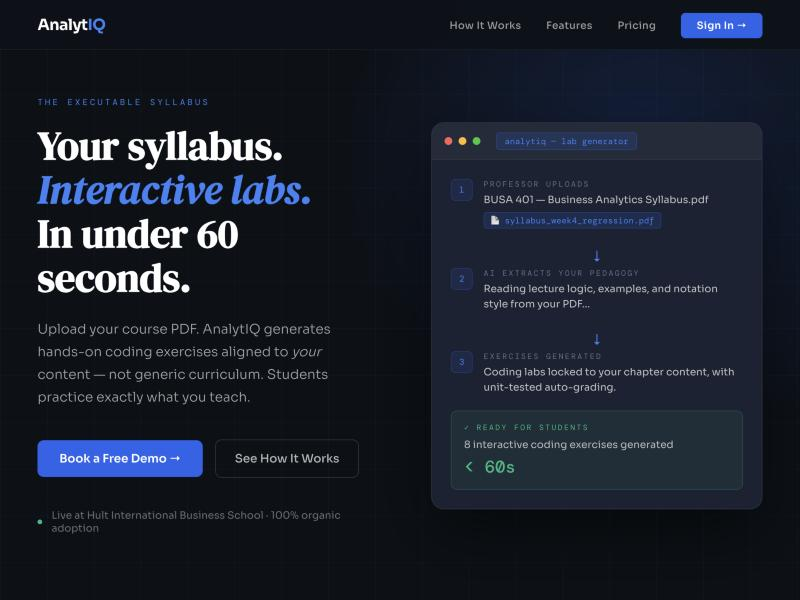

Founder & sole developer
AnalytIQ
Live at myanalytiq.com · source
Analytics professors can't assign much code, because grading it means either reading every submission by hand or comparing it to a reference answer as text — and text comparison doesn't measure correctness. AnalytIQ takes a professor's own chapter, generates exercises with executable test cases from it, and scores submissions by running the code and checking the actual output. It plugs into an institution's existing LMS over LTI 1.3, so students never create an account and grades flow straight back to the gradebook.
- Stack
- Flask · PostgreSQL · Redis + Celery · Gemini
- Commits
- 710
- Python
- ~39,800 lines
- Test files
- 66
- Languages graded
- Python · R · JS · SQL · Java
- Auth
- JWT · OIDC SSO · LTI 1.3